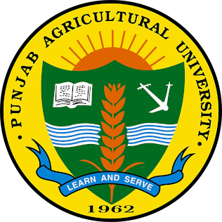

Texas A&M University
College Station, Texas- PhD, AgronomyJan 2025 – Present
- MS, AgronomyMay 2022 – Dec 2024
PhD Student · Agronomy · Texas A&M University
Agronomic field experiments · Remote sensing · Machine learning · Process-based modeling
Corteva DELTA Scholar · Bayer B4U Mentee
Blackland Research & Extension Center, Temple, TX
I work across the complete chain of a row crop study: replicated agronomic field experiments on the ground, UAV LiDAR and hyperspectral sensing from the air, and DSSAT and DayCent process-based models that extend a few seasons of measurements into long-term decision-support scenarios.

PhD project · manuscript in preparation
Extension tool · farmwth.com
PhD project · ongoing
PhD project · ongoing · CANVAS (ASA-CSSA-SSSA) 2025 talk
PhD project · ongoing
PhD project · ongoing
MS work · published in Agronomy for Sustainable Development, 2026
MS work
MS thesis work · manuscript accepted
Integrating LiDAR and hyperspectral data to estimate corn leaf area index: cross-field transferability
View projectIntegrating LiDAR and hyperspectral data to estimate corn leaf area index: cross-field transferability
View projectIntegrating LiDAR and hyperspectral data to estimate corn leaf area index: cross-field transferability
View projectSimulating net ecosystem exchange in no-till sorghum–cotton fields using DayCent and DSSAT
View projectEstimating greenhouse gas fluxes from corn fields with various cover crop and residue management practices
View projectAgronomy for Sustainable Development, 46(1), 3Impact factor 8.2
Juneja, P., Baath, G. S., Brar, J. S., Flynn, K. C., Yost, J. L., & Rajan, N. (2026). Corn responses to nitrogen fertilization as influenced by cover cropping. A meta-analysis. Agronomy for Sustainable Development, 46(1), 3. https://doi.org/10.1007/s13593-025-01067-6
@article{juneja2026corn,
title = {Corn responses to nitrogen fertilization as influenced by cover cropping. A meta-analysis},
author = {Juneja, Pulkit and Baath, Gurjinder S. and Brar, Jaiveer S. and Flynn, K. Colton and Yost, Jenifer L. and Rajan, Nithya},
journal = {Agronomy for Sustainable Development},
volume = {46},
number = {1},
pages = {3},
year = {2026},
doi = {10.1007/s13593-025-01067-6}
}Science of the Total Environment, 1005, 180836Impact factor 8.0
Brar, J. S., Baath, G. S., Juneja, P., Jeong, J., Yost, J. L., Flynn, K. C., & Wyatt, B. M. (2025). Impacts of dairy manure and synthetic fertilizers on greenhouse gas emissions and crop yields: A global meta-analytical comparison. Science of the Total Environment, 1005, 180836. https://doi.org/10.1016/j.scitotenv.2025.180836
@article{brar2025impacts,
title = {Impacts of dairy manure and synthetic fertilizers on greenhouse gas emissions and crop yields: A global meta-analytical comparison},
author = {Brar, Jaiveer S. and Baath, Gurjinder S. and Juneja, Pulkit and Jeong, Jaehak and Yost, Jenifer L. and Flynn, K. Colton and Wyatt, Briana M.},
journal = {Science of the Total Environment},
volume = {1005},
pages = {180836},
year = {2025},
doi = {10.1016/j.scitotenv.2025.180836}
}In Sustainable Development Using Geospatial Techniques (pp. 411–436). Wiley
Bawa, A., Baath, G., Juneja, P., & Brar, J. (2024). Drone mapping for agricultural sustainability. In D. Thakur, S. Kumar, H. A. S. Sandhu, & C. Prakash (Eds.), Sustainable development using geospatial techniques (pp. 411–436). Wiley. https://doi.org/10.1002/9781394214426.ch16
@incollection{bawa2024drone,
title = {Drone Mapping for Agricultural Sustainability},
author = {Bawa, Arun and Baath, Gurjinder and Juneja, Pulkit and Brar, Jaiveer},
booktitle = {Sustainable Development Using Geospatial Techniques},
editor = {Thakur, Disha and Kumar, Sanjay and Sandhu, Har Amrit Singh and Prakash, Chander},
pages = {411--436},
publisher = {Wiley},
year = {2024},
doi = {10.1002/9781394214426.ch16}
}Agrosystems, Geosciences & Environment
Computers and Electronics in Agriculture
For Remote Sensing of Environment
Punjab Agricultural University, in the heart of India's rice–wheat belt.
Home base for my field trials, flux tower and drone flights.
Graduate school, teaching and student government.
Presented at the ASA-CSSA-SSSA Annual Meeting.
Presented research at Corteva Agriscience headquarters.
Top student poster in Semi-Arid Dryland Cropping Systems at the ASA-CSSA-SSSA Annual Meeting.
Placed second in the student oral presentation, Airborne & Satellite Remote Sensing community.